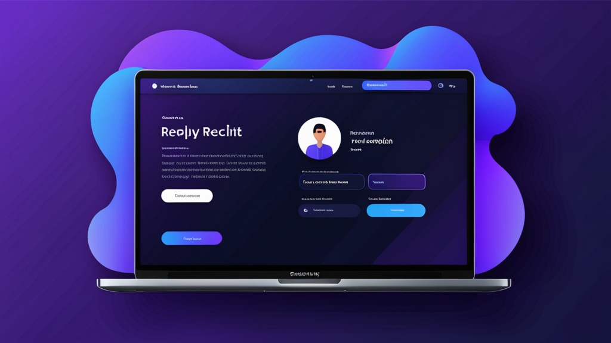

最佳招聘訊息AI回覆工具：招聘人員更聰明外展的指南
如果你曾經花超過十分鐘打字，為一位被動求職者撰寫個人化的LinkedIn訊息，你就知道那種痛苦。你想要聽起來人性化，提及他們特定的經歷，並包含正確的行動呼籲——同時避免不小心貼錯公司名稱。
最佳招聘訊息AI回覆工具正是為了解決這個問題。它們幫助你草擬感覺個人化、而非模板化的外展訊息。但並非所有工具都以相同方式運作，而了解如何有效使用它們，決定了你聽起來像機器人，還是像一位確實做了功課的招聘人員。
本指南涵蓋了在AI招聘助手應具備哪些特點、如何在不失去個人風格的情況下使用它，以及提升回覆率的實用技巧。
為什麼招聘人員需要更好的方式來撰寫訊息
招聘人員每週發送數十則——有時數百則——訊息。每一則都需要切換情境：檢視求職者的個人資料、查看職位描述，並撰寫一條在擁擠的收件匣中脫穎而出的訊息。
結果呢？許多招聘人員退而求其次，使用通用模板。求職者一眼就能識別這些。根據LinkedIn的數據，InMail的平均回覆率約為20-25%——而當訊息感覺像是大量生產時，這個數字會顯著下降。
一個招聘訊息產生器不僅節省時間。它幫助你在大量發送時維持品質。當你能產生一條草稿，自動帶入求職者的職位、行業以及他們個人資料中的相關細節時，你更有可能獲得回覆。
最佳招聘訊息AI回覆工具應具備哪些條件？
並非每個AI寫作工具都是為招聘而設計的。在你選擇之前，這裡有幾點需要注意：
1. 情境感知
該工具應理解你是誰、求職者是誰，以及你正在招聘哪個職位。不考慮情境的通用AI聊天機器人會產生模糊、無法使用的草稿。
2. 語氣控制
你需要能夠調整語氣——從專業正式到隨性直接。一個只能以單一風格書寫的求職者外展工具，無法在不同職位和行業中發揮作用。
3. 平台整合
最佳工具能在你已經使用的平台上運作：LinkedIn Recruiter、Greenhouse、Lever、Workday。需要在分頁之間複製貼上，就失去了自動化的意義。
4. 隱私與控制
你永遠不應該擔心你的API金鑰被曝光，或你的訊息被自動發送。最佳招聘訊息AI回覆工具會讓你完全掌控發送內容，並將你的資料保存在本地端。
如何在使用AI招聘助手時聽起來不像AI
即使是最好的工具，如果你不加以引導，也可能產出生硬的輸出。以下是如何保持人性化觸感的方法：
從一個強而有力的提示開始
不要只是按下「產生」。提供工具具體細節：
- 求職者目前的職位和公司
- 他們個人資料中的一個特定專案或成就
- 為什麼這個職位與他們的職業道路相關
範例提示：
「寫一條簡短的LinkedIn訊息給Spotify的一位資深產品經理。提及他們在功能個人化方面的工作。這個職位是一家B輪金融科技新創公司的產品主管。語氣：友善但專業。」
編輯輸出內容
在發送前務必閱讀草稿。刪除任何感覺不自然的詞句。加入一個只有你會注意到的個人問題或觀察。AI只是一個起點——你的風格完成整個訊息。
為不同階段使用不同模板
一條冷外展訊息不應該聽起來像一封拒絕信。一個AI招聘助手應該讓你在以下情況之間切換：
- 初次外展
- 跟進（如果沒有回覆）
- 面試邀請
- 拒絕或更新通知
每個階段都需要不同的語氣和細節程度。
實例：使用AI輔助前後對比
讓我們看看AI工具如何改善訊息的真實場景。
冷外展
之前（通用模板）：
「嗨[姓名]，我看到了你的個人資料，認為你會非常適合我們公司的一個職位。如果你有興趣，請讓我知道。」
之後（使用AI招聘助手）：
「嗨Sarah，你在HubSpot關於用戶留存的工作引起了我的注意——尤其是那個將流失率降低12%的活動。我們正在一家A輪公司建立類似的成長團隊，需要你的專業知識。這週有興趣快速聊一下嗎？」
第二則訊息提到了具體工作、顯示了研究，並提出了一個明確的問題。這就是被刪除和獲得回覆之間的差別。
跟進
之前：
「只是跟進我之前的訊息。如果你有興趣，請讓我知道。」
之後：
「嘿Sarah——我知道你很忙，所以我長話短說。如果時間不合適，完全沒關係。但如果你對這個職位好奇，我很樂意分享更多細節。無論如何，感謝你的考慮。」
這個跟進承認了求職者的時間，並消除了壓力，這通常會帶來回覆。
提升求職者回覆率的技巧
使用最佳招聘訊息AI回覆工具只是方程式的一部分。這裡還有一些提升外展效果的策略：
超越個人資料的個人化
提及他們近期貼文中的內容、共同聯絡人，或他們參加過的會議。AI不一定能捕捉到這些細微差別——手動加入它們。
保持簡短
求職者在手機上閱讀訊息。目標是3-5句話最多。如果你的AI草稿更長，請刪減。
包含低門檻的請求
與其說「我們可以安排一通電話嗎？」，不如試試「如果你好奇，我很樂意分享職位描述。」較低的承諾 = 較高的回覆率。
使用清晰的主旨行（針對電子郵件）
如果你使用的是像Greenhouse或Lever這樣的ATS，你的訊息可能會進入他們的收件匣。使用像「關於你在[公司]經歷的快速問題」這樣的主旨行——而不是「工作機會」。
為什麼招聘自動化仍應感覺人性化
有些招聘人員擔心使用AI會讓他們顯得不夠真實。事實恰恰相反。當你自動化寫作中重複的部分時，你就能騰出腦力來處理重要的事：閱讀求職者的個人資料、思考他們的適配度，以及建立融洽關係。
一個招聘自動化工具應該處理打字，而不是思考。最佳工具尊重這個界線。
為你的工作流程選擇合適的工具
如果你正在評估選項，請考慮該工具如何融入你的日常工作。你大部分時間是在LinkedIn Recruiter中度過？還是你主要使用像Workday或Lever這樣的ATS？最佳招聘訊息AI回覆工具能無縫整合到你現有的工作流程中，而不是作為一個你需要記得另外開啟的獨立應用程式。
同時也要考慮安全性。如果你的組織處理敏感的求職者資料，你需要一個能在本地端處理資訊、且不將訊息儲存在外部伺服器上的工具。以隱私為優先的設計比花俏的功能更重要。
一個符合這些條件的工具是RecruitReply AI——它在LinkedIn Recruiter和主要ATS平台內運作，使用裝置端AI，並且從不自動發送訊息。但無論你選擇哪個工具，本指南中的原則都適用。
最終想法
最佳招聘訊息AI回覆工具的目的不是取代招聘人員。它們是為了消除摩擦。當你能在幾秒鐘內產生一條個人化、聽起來人性化的草稿時，你就能更一致地發送更好的訊息，並且花費更少的力氣。
這會帶來更高的回覆率、更好的求職者關係，以及更多時間來處理招聘中真正重要的策略性部分。
如果你準備好嘗試一個尊重你工作流程和求職者隱私的工具，請查看 RecruitReply AI。它是為那些想要更快寫出更好訊息、同時不失個人風格的招聘人員所打造的。